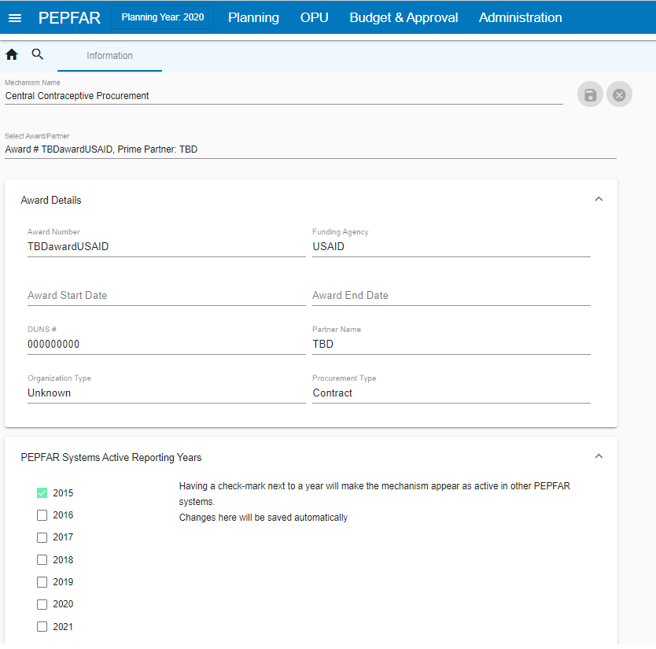

27 PSNU x IM
Upon completing previous sections of the DataPack, the PSNUxIM tab serves as a critical next step in allocating these targets to specific Implementing Mechanisms (IMs). To receive and populate a PSNUxIM tab, follow the below instructions.
27.0.1 DATIM Import
The following data points will be imported into DATIM from this section:
All mechanism integer value totals
All deduplication proportions
27.1 Receiving a PSNU x IM Tab for the First Time
Important Note:
Adding data to the PSNUxIM tab of your DataPack may cause the the filesize of your DataPack to increase, sometimes significantly. As this may have implications for the performance of your DataPack, it is recommended to run initial validations in the Self-Service App and ensure the DataPack is in a good state of completeness prior to generating the PSNUxIM tab. Although the App will give the option to generate the PSNUxIM tab each time you validate your tool, it is not required to complete this step until you are fully prepared to begin the mechanism allocation process.
Upon first receipt, the DataPack will not contain a populated PSNUxIM tab. To receive a populated version of this tab, follow the below instructions:
Submit a preliminary DataPack for validation to the self-service validation tool at datapack.DATIM.org.
The DataPack Self-Service App will automatically detect that the PSNUxIM tab has not yet been populated and will do so, returning a new copy of the DataPack with all other parts of the DataPack left unaltered, but containing a populated PSNUxIM tab. Note that this new copy of your DataPack will not automatically update any data derived from DATIM used across the rest of the DataPack, such as previous years’ result or target data. To request a DataPack with updated DATIM data, contact your PPM and assigned DUIT Liaison for approval, then submit a ticket to the DataPack Support Team at DATIM.Zendesk.com.
Download the new copy of your DataPack generated by the Self-Service App and make it available to the rest of your team as appropriate.
When you received your newly generated PSNUxIM tool for the first time by generating it from the DataPack Self-Service App, you will need to scroll to the “Target Values” Section that begins in column CW and copy down the formulas populated in row 15 all the way down to the bottom of your DataPack. This will be required in order for your Roll-up column to properly populate as well as the Deduplication sections. Once you do this, be sure to save the file.
Review the initial PSNUxIM tab for any obvious errors made in the automated generation process. Flag any issues to the DataPack Support Team at DATIM.Zendesk.com.
DO NOT DELETE any columns in the PSNUxIM tab. If there are blank columns not being used, HIDE them, but deleting columns will cause an error and will not allow the DataPack to validate the next time it is imported into the Self-Service App.
In producing a PSNU x IM tab for the first time, the DataPack Self-Service app will write data and formulas into this tab as follows:
Each PSNU.
DataPack Indicator Codes, which reference codes used throughout the DataPack hidden in row 14 on each tab.
Age, Sex, & Key Population for each sub-population, where specified.
Total DataPack Targets, as set in previous tabs of the DataPack. In adding these targets, the DataPack Self-Service App will write formulas allowing dynamic referencing of each target. In cases where additional updates to previous tabs of the DataPack may be necessary, any updates to target values will automatically be updated on this tab in this column.
Rollup totals, summing allocated targets across all mechanisms. This column can be helpful in quickly assessing whether DataPack Target totals have been over- or under-allocated across DSD or TA, and IMs. Red highlighting indicates cases where Rollup sums differ from original DataPack Target totals.
Percentage totals allocated to a column new in the COP22 Data Pack titled “Not PEPFAR”, signifying targets that may have been modeled in the DataPack to allow a full picture of services to be demonstrated, but which will likely be implemented by another partner organization separately from PEPFAR’s support. These values are considered in the Rollup totals to ensure complete allocation, but are dropped in passage to PAW, the Self Service App, and DATIM.
Percentage allocations across IMs and DSD or TA, based on FY22 Target proportions as currently reported in DATIM. Note that these are based on a snapshot of DATIM taken at the time this data is originally written into the PSNUxIM tab. These allocation percentages will not automatically update once they have been first written into this tab. See below for how to either adjust existing allocations, or add new IMs and allocations to this section.
Possible maximum and minimum Deduplicated Rollup Totals, Deduplicated DSD Totals, and Deduplicated TA Totals.
Observed and Targeted Dedupe Resolution strategies as seen in DATIM-reported data for FY22 Targets, or based on allocations chosen in the DataPack. See below for additional information.
Duplicated Rollups, summing by DSD, TA, and Total across all allocated mechanisms. These data will automatically update as allocations are adjusted on this tab, or as total targets are adjusted on other tabs.
IM-level Target Values, as integers, calculated by multiplying DataPack Target totals by mechanism allocation percentages.
27.2 Adjusting IM Allocations
To adjust, remove, and add allocations across Mechanisms in the PSNUxIM tab, follow the below instructions:
Review initial allocations written automatically into the DataPack based on patterns observed in FY22 Targets in DATIM.
To adjust existing percentages, type over percentages already provided in the DataPack with new percentages reflecting COP22 strategic programming. Note that these allocations are both to distribute targets to mechanisms as well as to distribute them across DSD and TA. In other words, in a case with no deduplication, allocations should sum to 100%, representing how each target will be divided both across mechanisms and by service type.
To remove existing percentages, DO NOT DELETE COLUMNS. Instead, either replace the name of a mechanism in row 14 with a new name (following the format #####_DSD or #####_TA) and repurpose or replace the allocations in the rows below it, or delete only those percentage allocations for a given mechanism — but keeping the mechanism name in row 14 the same — effectively withdrawing it from a certain geography or population or program area.
To add new mechanisms for allocation, follow the below steps:
Unhide the buffer of hidden green columns between pre-populated mechanism columns and the gray columns to the right describing Deduplicated Totals (Columns I – CE).
Type the new mechanism name into the green cell in row 14, making sure to also denote the service type, whether DSD or TA. These names must be of the format: #####_DSD, or #####_TA. Do not leave any blank columns between mechanisms. Again, DO NOT DELETE COLUMNS.
Confirm that mechanisms added here are entered in FACTS Info, approved, and valid for MER data entry for COP22. While there can be up to a 24 hour delay in synchronizing these mechanisms from FACTS Info to DATIM, as soon as a mechanism is added and approved and valid in FACTS Info, its 4-6 digit numeric code can be entered here in the DataPack, and you can begin allocating targets to this new mechanism. However, note that in order to validate these data using the DataPack Self-Service App, mechanisms must have already been synchronized from FACTS Info to DATIM. Validation alerts in the DataPack Self-Service App will note where this may not be the case.
Add allocations in the rows below any new mechanisms, making sure that new and old allocations still aggregate to no less than 100% allocation in all cases, and also no more than 100% allocation where no deduplication occurs.
27.3 Resolving Invalid Mechanism Errors
The PSNUxIM tab will only populate with mechanisms that are marked as “active” for the current COP year in DATIM. Any mechanisms that are manually added to the PSNUxIM tab that are not active and valid will be flagged by the Self-Service App.
To ensure a mechanism is valid for the current COP year, go into the COP module in FACTS Info-Next Gen (FI-NG) and check the box for “PEPFAR Systems Active Reporting Years” for the appropriate COP year. Please note that it may take up to 24 hours for active mechanism flags to be carried over into DATIM and resolve validation errors in the Self-Service App.

27.4 Note on Peace Corps Mechanisms
As in COP21, Peace Corps will no longer report targets under their older mechanisms, and will instead report all targets under Management & Operations (M&O) mechanisms. Note that the PSNUxIM tab will initially populate mechanisms and distributions based on previous year targets, so there may be cases where you will need to shift Peace Corps targets to M&O mechanisms from previous mechanisms by changing the IM reference number at the top of the tab to the appropriate M&O IM code.
27.5 Resolving Rounding Errors
Due to the combination of multiplication of percentage values against target values coming from other parts of the DataPack, and rounding of all mechanism target values to integers, target values allocated against mechanisms may roll up with some slight difference from DataPack Targets. It may be necessary to iteratively adjust rounding errors and deduplications throughout the IM allocation process, though in general it is a good practice to resolve rounding errors as much as possible before moving on to deduplication. To resolve rounding errors, adjust percentages gradually, as follows:
If you had previously unhid the buffer of green Percentage Allocation columns (the section between columns I and CE) while adding new mechanisms, or the Deduplication columns in columns CF to CV, it may be helpful to hide columns in these sections again now to more easily see both Percentage Allocations and Target Values at the same time on your screen.
It may also be helpful to review Duplicated Rollup values in columns CW to FS in addition to DataPack Targets in column G so as to consider rounding errors distinctly from the impacts of deduplication.
While maintaining overall distribution patterns as intended, gradually adjust percentage allocations under affected mechanisms in columns I through CE to increase or decrease Duplicated Rollups as needed.
Note that while all rounding errors should be resolved if possible, a small margin of error around some values is permissible, so long as this does not exceed an absolute value of 2 in either direction of the DataPack Target in column G.
27.6 Performing Deduplication
Follow the below steps to perform all Deduplication associated with IM allocations of targets. Note that all deduplication must be performed here in the PSNUxIM tab, and will not be permitted for COP22 targets in DATIM.
If you had previously unhid the buffer of green Percentage Allocation columns (columns I – CE), it may be helpful to hide empty columns in this section again now.
Review Duplicated Rollups for DSD, TA, and total targets. These are dynamically summed across all mechanism targets allocated in the PSNU x IM tab to the right of these columns. To adjust these totals, return to the Percentage Allocation section.
Review TA Deduplication, DSD Deduplication, and Crosswalk Deduplication (recommended in that order for each row):
Where only a single mechanism is assigned targets under either DSD or TA (for DSD and TA Deduplication), where deduplicated DSD and TA totals aggregate to less than or equal to DataPack targets (for Crosswalk Deduplication), or where total mechanism targets aggregate to less than or equal to DataPack Targets, gray highlighting in these sections indicates that deduplication is not necessary or permitted.
Review allowable ranges for possible deduplicated totals by referencing the SUM and MAX rollup columns. As in the DATIM Deduplication App, SUM values represent cases with zero deduplication, and MAX rollups represent application of the most deduplication possible, resulting in values equivalent to the largest IM target among either the DSD or TA mechanisms (for DSD or TA deduplication), or the larger of either DSD or TA deduplicated totals (for crosswalk deduplication).
Review Observed Dedupe Resolutions seen in FY22 Target allocations. These are provided for reference, and indicate which deduplication approach was used in FY22 Target deduplication, performed in the DATIM Deduplication App.
For cases where Custom deduplication was used in FY22 Targets, review the Custom Dedupe Allocation observed in FY22 Targets. Percentages here are calculated by dividing the DSD or TA deduplication value (for DSD or TA deduplication) or the sum of Deduplicated DSD and Deduplicated TA (for crosswalk deduplication) by the sum of all mechanisms and deduplication values, across both DSD and TA. As such, these values are all negative or zero, and can be easily compared against target allocation percentages used in columns I – CE.
In columns CT for TA, CN for DSD, and CH for Crosswalk, manually type the deduplication resolution approach to be used to resolve deduplication issues, as follows:
“CUSTOM” or “custom” or “Custom”
“SUM” or “sum” or “Sum”
“MAX” or “max” or “Max”
Where Custom deduplication is selected, also indicate the percentage allocation to be assigned to the deduplication value in the column to the immediate right. Again, a reminder that these values should all be negative or zero, and represent the proportion of deduplication values relative to the DataPack Target total in column I. Initially upon indicating Custom deduplication, the DataPack will preset this deduplication allocation equal to the value observed in FY22 Targets, if any. You may alter and adjust this value as needed, so long as it is negative or zero. Also note that it is not enough to only type in a percentage deduplication allocation; you must also enter “CUSTOM”, “SUM”, or “MAX”, as explained in the previous step. Note that instead of entering “SUM”, it is possible to enter “CUSTOM” but enter a deduplication percentage allocation of 0%; and instead of entering “MAX”, it is possible to enter “CUSTOM” but enter a deduplication percentage allocation that results in the equivalent of the MAX value shown in columns CG, CL, or CR.
Review the Rollup values in column H for any mismatch against DataPack Targets in column G that may necessitate adjustment of Deduplication allocations. Note that while it is not a strict requirement that percentage allocations across mechanisms and deduplication add to 100%, it is a requirement that integer values add to equal the DataPack Target in column G, ± 2. Red highlights in column H indicate values more than 2 (integer, absolute value) away from the DataPack Targets in column G; yellow highlights indicate values 1 or 2 (integer, absolute value) away from the DataPack Targets column G.